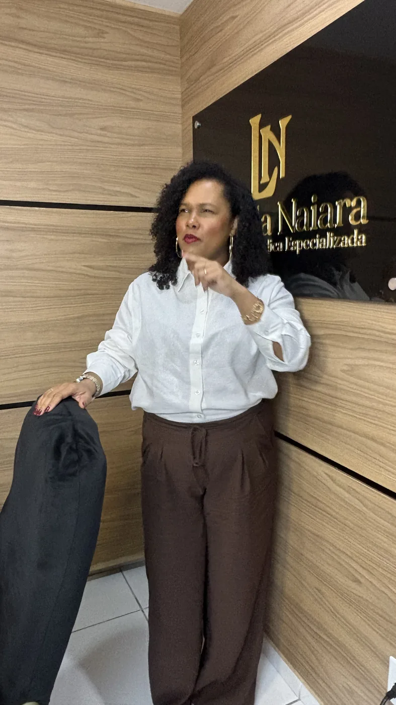

Os Editais 01, 02, 03 e 04/2020 foram homologados em 18 de agosto de 2022 e a validade vai até 18 de agosto de 2026. O município seguiu contratando temporários para as mesmas funções enquanto você aguardava. O TCE-RJ confirmou a irregularidade em 2024 e multou os gestores. O MP questiona desde 2015. Isso tem nome: preterição ilegal — e há ação judicial para resolver.
Todos os dados e fundamentos explicados pela Dra. Luanda.

Anos de estudo, sacrifícios, aprovação. Você cumpriu tudo o que a lei exigiu. O município de Cabo Frio é que não cumpriu — e o próprio Tribunal de Contas confirmou isso.
O Ministério Público ajuizou ação contra as contratações irregulares em 2015 (ACP nº 0008703-57.2015.8.19.0011). Cabo Frio seguiu contratando temporários por mais uma década — mesmo após o TAC de 2018 e o concurso de 2022.
Em 15/05/2024, o Acórdão TCE-RJ nº 215.742-5/23 negou o registro dos contratos temporários de Cabo Frio por ausência de comprovação de necessidade e aplicou multa aos gestores responsáveis. O órgão de controle confirmou o que os candidatos já viviam.
As vagas abertas no edital foram muito inferiores ao número real de contratos temporários que deveriam ser substituídos. A maioria dos aprovados ainda aguarda — e o município seguiu renovando contratos de temporários durante toda a vigência do concurso.
Quem não agir judicialmente antes do fim da validade pode perder o direito à nomeação definitivamente. A janela de oportunidade é agora — não depois.
Não é sua palavra contra a da Prefeitura. São duas instituições públicas que, de forma independente, confirmaram a irregularidade.
O MP ingressou com ação civil pública em 2015 questionando as contratações temporárias irregulares de Cabo Frio. Em 2018, foi assinado um Termo de Ajustamento de Conduta — que deveria resolver. O município descumpriu, o concurso foi realizado em 2020, homologado em 2022, e as contratações temporárias continuaram sendo renovadas durante toda a vigência do certame.
ACP nº 0008703-57.2015.8.19.0011 — 2ª Vara Cível de Cabo FrioEm 15 de maio de 2024, o TCE-RJ julgou o Processo nº 215.742-5/23 e recusou o registro dos contratos temporários do município de Cabo Frio. O fundamento: ausência de comprovação de necessidade transitória e excepcional — condição exigida pela CF para justificar contratação temporária quando há concurso público homologado. Os gestores responsáveis foram multados pessoalmente. A irregularidade está oficialmente reconhecida.
TCE-RJ · Processo nº 215.742-5/23 · Acórdão de 15/05/2024Enquanto você aguardava a convocação, a Prefeitura de Cabo Frio mantinha contratos temporários para as mesmas funções — em proporções que chegam a 53× o número de vagas do edital.
| Cargo | Edital | Vagas publicadas | Contratos temporários | Proporção | Situação |
|---|---|---|---|---|---|
| Técnico de Enfermagem | 03/2020 | 73 | 728 | 10,0× | ⚡ Evidência muito forte |
| Enfermeiro | 02/2020 | 36 | 473 | 13,1× | ⚡ Forte evidência |
| Assistente Social | 02/2020 | 6 | 101 | 16,8× | ⚡ Forte evidência |
| Psicólogo | 02/2020 | 2 | 106 | 53,0× | ⚡ Forte evidência |
| Professor Docente I | 01/2020 | CR* | 531 | — | ⚡ Chamada foi até o 215º |
| Inspetor Escolar | 01/2020 | 29 | 12 | — | ⚡ Edital confirmado |
| Orientador Educacional | 01/2020 | 23 | 14 | — | ⚡ Edital confirmado |
| Supervisor Escolar | 01/2020 | 8 | 18 | — | ⚡ Edital confirmado |
| Médico (Plantonista/Socorrista) | 02/2020 | 164 | 609 | 3,7× | Prova de necessidade permanente |
| Docente II (Mat./Port.) | 01/2020 | 46 | 208 | 4,5× | ⚡ Forte evidência |
* CR = Cadastro Reserva (o Edital 01/2020 não publicou vaga fixa para Docente I — pelo Tema 161 do STF, necessidade demonstrada por contratados temporários também gera direito discutível para quem está na reserva). Contratos temporários de Inspetor Escolar (12), Orientador Educacional (14) e Supervisor Escolar (18): confirmados no Portal da Transparência de Cabo Frio (jul/2026).
Fonte: dados extraídos com base no Portal da Transparência Municipal de Cabo Frio, nos autos da ACP nº 0008703-57.2015.8.19.0011 (2ª Vara Cível de Cabo Frio), no Acórdão TCE-RJ nº 215.742-5/23 (15/05/2024) e nos contratos vigentes na data da homologação dos Editais 01, 02, 03 e 04/2020 (Decreto 6.909, de 18/08/2022, prorrogado pelo Decreto 7.335, de 15/07/2024). Dra. Luanda Naiara, OAB/RJ 228701.
É onde eu conheço cada edital, cada cargo e cada contrato — e onde já entrei na Justiça pelas famílias daqui.
já me confiaram o caso delas. Não é atuação eventual: é acompanhamento contínuo deste concurso desde a homologação.
três só em 2026, abrindo os documentos na tela: o cronograma da SECAD, a folha da Transparência e o acórdão do Tribunal de Contas.
Dra. Luanda Naiara, OAB/RJ 228.701. Direito Administrativo e Previdenciário.
Em casos de Técnico de Enfermagem e de Psicólogo, juízes na comarca de Cabo Frio e desembargadores no Tribunal de Justiça já reconheceram esse direito. Cada caso é um caso — o seu precisa ser analisado antes de qualquer conversa sobre resultado. Mas casos com esse mesmo desenho já foram acolhidos pela Justiça.
Ela chamou, sim — foram 1.848 convocações e 880 posses. Só que as convocações do concurso pararam em dezembro de 2024. De lá para cá, o município só abriu processo seletivo para contratar temporário. E a validade termina em 18 de agosto de 2026. Esperar agora é esperar o quê, exatamente?
Reivindicar a nomeação não é briga pessoal — é pedir o cumprimento da lei. E quem vai te convocar é a mesma administração que deixou de seguir a ordem de classificação. Nenhum dos aprovados que entraram na Justiça deixou de ser bem recebido por isso.
Por isso a primeira análise é gratuita e honesta. Eu olho a sua colocação, a lista em que você concorreu e os contratos temporários do seu cargo. Se o seu caso não tiver fundamento, eu te digo isso na primeira conversa — sem enrolação e sem custo.
Você se encaixa em um dos critérios abaixo? Então há base jurídica para agir.
Candidato com colocação igual ou inferior ao número de vagas publicadas no edital tem direito subjetivo à nomeação pelo STF (RE 598.099). Não convocado = preterido.
Se há mais contratos temporários do que vagas publicadas (como no caso dos 728 temporários vs. 73 vagas dos técnicos), o candidato em reserva também tem direito demonstrável.
Técnico de Enfermagem, Enfermeiro, Assistente Social, Psicólogo, Professor Docente I, Inspetor Escolar, Orientador Educacional ou Supervisor Escolar — todos os cargos de Saúde e Educação com contratos temporários registrados durante a vigência do concurso.
A ação judicial deve ser ajuizada enquanto o concurso está válido. A validade da homologação de agosto de 2022 está se encerrando. O momento é agora.
A Dra. Luanda explicou tudo: os dados, os fundamentos jurídicos e o caminho para quem foi aprovado e ainda não foi nomeado. Assista e siga para acompanhar.
A ação de preterição tem respaldo no STF, na Constituição Federal e nas decisões do próprio Tribunal de Contas do Estado — tudo aplicado ao caso de Cabo Frio.
O Supremo fixou em repercussão geral que o candidato aprovado dentro do número de vagas tem direito subjetivo à nomeação. O direito se estende a candidatos em reserva quando se demonstra necessidade do serviço — situação evidenciada pelos 728 temporários ativos no cargo de Técnico de Enfermagem.
A Constituição determina que o acesso a cargos públicos ocorre via concurso. A contratação temporária é exceção justificável apenas por necessidade transitória de excepcional interesse público — hipótese que não existe quando o município tem concurso homologado e candidatos aguardando convocação.
Em maio de 2024, o Tribunal de Contas do Estado do Rio de Janeiro recusou o registro dos contratos temporários de Cabo Frio e multou os gestores por não comprovarem a necessidade transitória. O acórdão é prova documental direta da irregularidade — e fortalece a ação judicial individual.
Enquanto os aprovados seguem esperando, a Prefeitura de Cabo Frio mantém, hoje, um exército de contratados temporários no lugar de quem passou no concurso. O concurso foi homologado em 18/08/2022 e a validade se encerra em 18/08/2026. Depois disso, discutir a nomeação por este certame fica muito mais difícil.
E você não está sozinho nessa tese: o TCE-RJ já recusou o registro desses contratos e multou os gestores (Acórdão 215.742-5/23) e o Ministério Público questiona a prática desde 2015. E os tribunais superiores já firmaram o entendimento: o STF reconhece o direito à nomeação quando há preterição arbitrária durante a validade do concurso (Tema 784, RE 837.311) e quando o aprovado está dentro das vagas (Tema 161, RE 598.099); o STJ entende que contratar temporários para o mesmo cargo na vigência do concurso configura preterição e gera direito à nomeação do aprovado dentro das vagas. O caminho já foi aberto — falta a sua ação individual.
Analisar meu caso antes de 18/08/2026Primeira análise gratuita · Cada caso é único · Conteúdo informativo, sem promessa de resultado (OAB)
O Ministério Público entrou na Justiça em 2015 e o processo já determinou a rescisão desses contratos, com multa pessoal à gestão. O Tribunal de Contas recusou registrá-los em 2024. O fundamento existe — o que falta é a sua ação individual, e ela começa com uma conversa gratuita. Se o seu caso não tiver fundamento, eu te digo na primeira conversa.
Primeira conversa gratuita · Sem compromisso · WhatsApp
OAB/RJ 228701 · Direito Administrativo
Advogada e sócia-fundadora com atuação nacional, especialista em Direito Administrativo com foco em servidores públicos e candidatos aprovados em concurso. Pós-graduada em Direito Trabalhista e Previdenciário pela PUC, com especialização em Gestão e Marketing para escritórios de advocacia.
Presidente da Comissão de Direito Administrativo da OAB 29ª Subseção (Campo Grande/RJ), mentoranda do Dr. Euro Jr. no Ecossistema TITANIUM. Atua com casos de preterição em todo o Brasil — sempre orientada por dados, fundamento jurídico sólido e respeito integral às normas de ética da OAB.